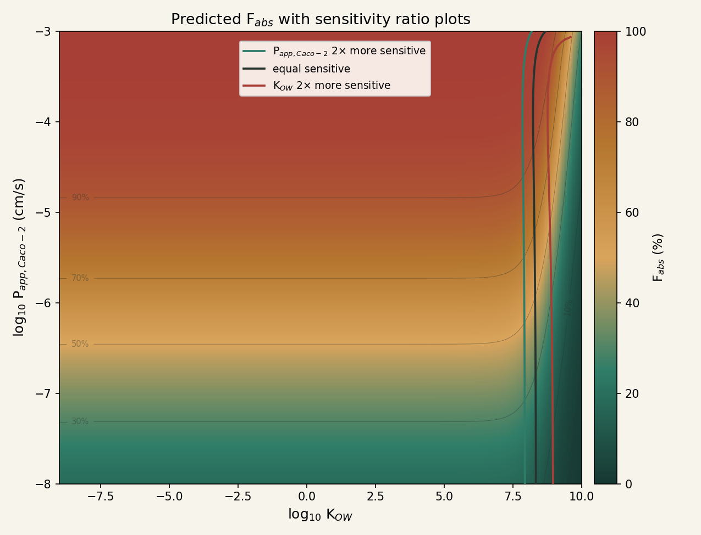

Predicts oral fraction absorbed (Fabs) in the human GI tract from octanol–water partitioning (KOW, pH 7.4) and Caco-2 apparent permeability (Papp,Caco-2), following the mechanistic model in Wang, Zhang, Li & Li, Environment International 193 (2024) 109108. Regimes here are classified by log–log sensitivity (elasticity).
Searches a local dataset of 10,564 chemicals extracted from EPA's httk R package (Honda et al.). Not found? Try EPA's CompTox Dashboard →
Boundaries are computed at the current Papp,Caco-2 from the local sensitivity of Fabs to each parameter, not the fixed KOW cutoffs used in the original paper's Section 4.3. See Regime classification below.
Paste one chemical per line as name, Kow, Papp_Caco-2 (Papp in cm/s). A header row is optional and will be detected automatically.
Name
KOW
Papp,Caco-2 (cm/s)
Fabs
Regime
No results yet. Paste chemicals above and click Calculate all.
Regime classification
The three regions above are defined from the local log–log sensitivity (elasticity) of Fabs to each parameter, Sx = ∂lnFabs/∂lnx, evaluated numerically by central finite difference at the current (KOW, Papp,Caco-2). The ratio |SKow|/|SPapp| is then compared against a 2× threshold:
Permeability-limited, ratio ≤ 0.5. Fabs here responds almost entirely to Papp,Caco-2; changing KOW barely moves it. Physically, the chemical partitions into gut fluid without difficulty, so the rate-limiting step is how fast it crosses the intestinal membrane: membrane permeability is the bottleneck, not solubility.
Mixed, ratio between 0.5 and 2. Neither parameter dominates by the 2× margin: KOW and Papp,Caco-2 both meaningfully move Fabs here, so a reliable prediction needs reasonably accurate estimates of both: getting one right while guessing at the other isn't enough in this range.
Partitioning-limited (solubility-limited), ratio ≥ 2. Fabs now responds almost entirely to KOW; changing Papp,Caco-2 barely moves it. Physically, the chemical is lipophilic enough that it struggles to partition out of the lipid/membrane environment into the aqueous gut fluid in the first place; once that partitioning step is the bottleneck, how fast it could cross the membrane no longer matters.

Predicted Fabs across the full KOW/Papp,Caco-2 domain, with the three sensitivity-ratio lines from above overlaid: where Papp,Caco-2 is 2× more sensitive (teal), where the two are equally sensitive (black), and where KOW is 2× more sensitive (red). The lines track the diagonal band where Fabs transitions from Papp-controlled to Kow-controlled.